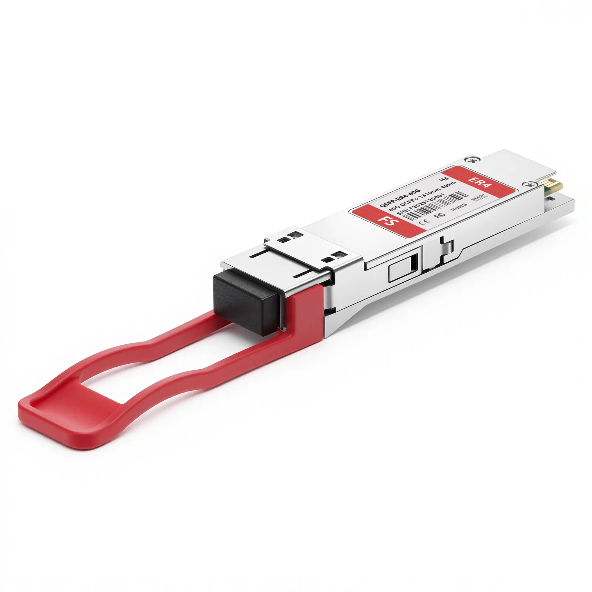

INTRODUCTION
Le QSFP+ (Quad Small Form-factor Pluggable Plus) est un module émetteur-récepteur compact, standardisé et remplaçable à chaud. Il sert d'interface pour connecter des équipements matériels (comme des commutateurs ou des routeurs) à des câbles de réseau. Sa particularité est d'intégrer quatre canaux de transmission indépendants, permettant d'atteindre un débit global de 40 Gb/s (généralement 4 x 10 Gb/s) via de la fibre optique ou des câbles en cuivre.
MODULE QSFP+

RÉSUMÉ
Ce module est privilégié car il offre une densité de ports exceptionnelle et permet de quadrupler la vitesse de transfert des données sans augmenter l'espace physique sur les machines. Il apporte également une grande flexibilité : un port QSFP+ peut être "divisé" (via un câble breakout) pour se connecter à quatre ports SFP+ de 10 Gb/s distincts, ce qui facilite grandement l'évolution progressive d'une infrastructure réseau.